AMATEGEKO Y’UMUHANDA
(Ibibazo n' Ibisubizo)
Iteka rya Perezida no 85/01 ryo ku wa 02/09/2002 rishyiraho amabwiriza rusange agenga imihanda n' uburyo bwo kuyigendamo. Igazeti
Mushaka kwiga ibijyanye n'ibyapa, mukande iyo buto iri hasi, kanditse ho "HANO" HANO
- SOBANURA AMAGAMBO AKURIKIRA
1 / Inzira nyabagendwa.Ing.2
Ni imbago zose z’imihanda minini, amabarabara, aho abantu nyamwinshi bahurira, aho imodoka nyinshi zihagarara, inzira n’utuyira two ku muhanda, ibiraro, ibyombo, muri rusange imihanda nyabagendwa igendwamo ku butaka.
2 / Umuhanda.
Ni igice cy’inzira nyabagendwa kinyurwamo n’ibinyabiziga ikaba yagira imihanda myinshi.
3 / Inzira y’ibinyabiziga.
Ni umuhanda n’inzira ziwukikije.
4 / Igisate cy’umuhanda.
Kimwe mu bisate bigabanyije umuhanda mu burebure bwawo.
5 / Agahanda k’amagare.
Igice cy’inzira nyabagendwa cyahariwe amagare na velomoteri kigaragazwa n’ikimenyetso cyabigenewe.
6 / Isangano.
Ahantu hose imihanda ihurira
7 / Inkomane.
Aho umuhanda wisukira mu wundi.
8 / Akayira.
Inzira ifunganye yagenewe abanyamaguru, ibinyabiziga by’ibiziga bibiri.
9 / Inzira y’igitaka.
Inzira nyabagendwa yagutse ariko itanyurwamo n’ibiziga bibiri.
10 / Urusisiro.
Ahantu hari amazu yegeranye cg afatanye.
11 / Umuyobozi.
Ni umuntu wese utwaye ikinyabiziga cg uyobora mu nzira nyabagendwa inyamaswa cg amatungo.
12 / Umukozi ubifitiye ububasha.
Umukozi wambaye mu buryo bugarara imyenda iranga imirimo ashinzwe.
13 / Ikinyabiziga.
Igikoresho cyose gikoreshwa mu gutwara ibintu n’abantu ku butaka, igihingishwa, gikoreshwa mu nganda n’ahandi.
14 / Ikinyamitende.
Ikinyabiziga cyose kigendeshwa n’ingufu z’abantu nk’igare,…
15 / Igare.
Ikinyamitende cyose cy’ibiziga bibiri
16 / Velomoteri.
Ikinyabiziga gifite ibiziga bibiri kandi gifite moteri itarengeje imbaraga za KvA 4 n’umuvuduko ntarengwa ukaba 60km/h
17 / Ipikipiki.
Ikinyabiziga cyose cy’ibiziga bibiri gifite moteri ukuyemo za velomoteri.
18 / Ikinyamitende itatu cg ine.
Ibinyabiziga bifite moteri itarengeje KvA15
19 / Ikinyabiziga kigendeshwa na moteri.
Ikinyabiziga cyose gifite moteri kandi kigendeshwa gusa n’ibikigize.
20 / Imodoka.
Ikinyabiziga cyose kigendeshwa na moteri uretse za velomoteri, amapikipiki, imashini zihinga cg zikurura izindi.
21 / Romoroki.
Ikinyabiziga cyose cyagenewe gukururwa.
22 / Makuzungu.
Ni romoroki iyo ariyo yose ifatishwa ku kinyabiziga gikurura.
23 / Romoroki ntoya.
Romoroki ifite ibiro bitarenga 750
24 / Ibinyabiziga bikomatanye cg ibinyabiziga bikururana.
Ibinyabiziga bikomatanye bigenda nkaho ari kimwe.
25 / Ikinyabiziga gifanije.
Ni ikinyabiziga gikomatanye kimwe ari ikinyabiziga ikindi ari makuzungu
26 / Ikinyabiziga gikururana kabiri.
Ikinyabiziga gifatanije n’ikindi ari makuzungu.
27 / Uburemere bwite
Uburemere bw’ikidapakiye.
28 / Uburemere bwikorewe
Uburemere bwite hongewemo uburemere bw’imizigo.
29 / Uburemere ntaregwa bwemewe
Uburemere bugendanwa.
30 / Guhagarara umwanya munini
Igihe kiruta igihe ikinyabiziga giharara hinjiramo abantu cg ibintu.
31 / Guhagarara umwanya muto.
Igihe ikinyabiziga giharara kugira ngo abantu bajyemo cg ibintu bijyemo.
32 / Akagarura rumuri. Ing.2(30)
Akantu karabagirana gasubiza urumuri ku kirwohereje.
33 / Ikinyabiziga ndakumirwa
Ibinyabiziga by’abapolisi, Ibizimya inkongi, Ibitwara abarwayi, aho bijya bigiye gutabara birangwa n’intabaza irabagira cg irangurura amajwi.
34 / Amatara y’urugendo. Ing.2(32)
Amatara y’ikinyabiziga amurika imbere mu muhanda mu ntera ndende
35 / Amatara yo kubisikana .Ing.2(33)
Amatara y’ikinyabiziga amurika inzira nyabagendwa atagobye guhuma ibinyabiziga bituruka imbere.
36 / Amatara ndangambere. Ing2(34)
Amatara y’ikinyabiziga akiranga kandi agaragaza ubugari bwacyo burebewe imbere.
37 / Amatara ndanganyuma. Ing.2(35)
Amatara y’ikinyabiziga akiranga kandi agaragaza ubugari bwacyo burebewe inyuma.
38 / Amatara kamena-bihu y’imbere.Ing.2(36)
Amatara y’ikinyabiziga abonesha neza imbere yacyo mu gihe cy’igihu, cy’imvura nyinshi, cy’urubura cg cy’umukungugu.
39 / Amatara kamena-bihu y’inyuma.Ing.2(37)
Amatara y’ikinyabiziga akiranga kandi yerekana ubugari bwacyo uburebeye inyuma, mu gihe cy’ibihu, cy’urubura cg mu bihe by’umukungugu.
40 / Amatara yo kubisikana..Ing.2(33)
Amatara magufi.
41 / Amatara yo gusubira inyuma.Ing.2(38)
Amatara abonesha inzira inyuma y’ikinyabiziga, akereka n’abandi ko icyo kinyabiziga kiri gusubira inyuma.
42 / Itara ndangacyerekezo. Ing.2(39)
Cg ikinnyoteri, Itara ry’ikinyabiziga ryereka abandi bagenzi ko ikinyabiziga gishaka gukata.
43 / Itara rishakisha. Ing.2(40)
Itara rihindukizwa rishobora kureba ikintu kiri no mu mpande zacyo.
44 / Itara ndangamubyimba. Ing.2(41)
Itara ndangaburumbarare, itara ry’ikinyabiziga ryerekana ubugari bw’ikinyabiziga haba inyuma cg imbere.
45 / Ubuso bubonesha. Ing.2(42)
Ubuso busohokana urumuri, cg ubuso burabagiranamo urumuri ku tugarurarumuri.
46 / Itara ry’umuhondo. Ing.2(43)
Umuhondo wiganje, cg usa n’icunga rihishije cg umuhondo wiganje.
47 / Ukuboko kuzamuye k’umukozi ubifitiye ububasha kuvuga iki ?
Kuvuga ko umugenzi wese agomba guhagarara keretse uwageze mu masangano ugomba guhita ahava.
48 / Ukuboko cg amaboko atambitse ategeka iki ?Ing.5(2b)
Hategekwa guhagarara abaturuka mu cyerekezo gisanganya amaboko arambuye.
49 / Kuzunguza intambike itara ritukura bivuga iki ?
Hahagarara abo iryo tara rireba.
50 / Vuga batanu mu bakozi babifitiye ububasha.Ing.3
Ba ofosiye na ba suzofiye bo muri polisi y’igihugu bari mu kazi.
Ba kaporali na abapolisi bo muri Polisi y’igihugu igihe bari mu kazi.
Abapolisi bo mu mutwe ushinzwe umutekano mu muhanda.
Abakozi bo mu biro by’amateme.
Abakozi ba gasutamo.
Abakozi bo mu biro by’imisoro.
Abakozi b’ikigo cy’ubucyerarugendo.
Abakozi bo mu biro bya Ministeri ishinzwe gutwara ibintu n’ibintu babiherewe uburenganzira na Ministiri w’ubutabera.
51 / Vuga ibintu bitanu umugenzi wese uguweho n’impanuka asabwa ?Ing.4
Guhita ahagarara niba bishoboka.
Gukora uko ashoboye kugirango badahungabanya uburyo bwo kugendera mu muhanda.
Kwirinda guhindura ibimenyetso,
Kumenyesha no gutumaho abubahiriza amahoro bari hafi aho.
52 / Ni ryari umuyobozi wese ategetswe kugaragaza umwirondoro we ? Ing.4(4)
Iyo abandi bantu bahuye n’impanuka babimusabye.
53 / Ni ryari umuyobozi agomba guhita akuraho ikinyabiziga cye gihagaze umwanya munini cg muto ?
Ni igihe abisabwe n’umukozi ubifitiye ububasha.
54 / Ni ryari umugenzi wese agomba kubahiriza ibimenyetso byashyiriweho gutunganya uburyo bwo kugenda mu muhanda ?Ing.5(5)
Igihe bitunganijwe neza kandi bigaragara bihagije.
55 / Ibitegekwa birusha ibindi gukomera ni ibihe ?Ing.5(6)
Ni ibitegekwa n’abakozi babifitiye ubushobozi.
56 / Vuga ikintu utagomba kwibagirwa igihe ugiye gutwara ikinyabiziga kigendeshwa na moteri?Ing.6(1)
Ni uruhushya rwo gutwara icyo kinyabiziga.
56) Sobanura kandi uvuge abagomba impushya zikurikira :Ing.6(2)
a / Urwego A : Amapikipiki n’ibinyamitende itatu biriho cg bidafite intebe ku ruhande. Imyaka 18
b / Urwego B : Imodoka zagenewe gutwara abantu kandi zifite imyanya 8 ntarengwa habariwemo n’uw’umuyobozi. Imyaka 18
Imodoka zagenewe gutwara ibintu zifite uburemere ntarengwa bwa toni 5
Ibinyamitende ine bifite moteri.Imyaka 18
c / Urwego C: Imodoka zagenewe gutwara ibintu bifite uburemere bwemewe burenga toni 5.Imyaka 20
d / Urwego D: Imodoka zagenewe gutwara abantu kandi zifite imyanya irenga 8 hatabariwemo umwanya w’umuyobozi. Imyaka 20
e / Urwego E. Ibinyabiziga bikomatanye bifite ikinyabiziga gikurura kiri mu rwego rwa B, C, D. Imyaka 20
f / Urwego F: Ibinyabiziga bidasanzwe (imashini zihinga, ...) Imyaka 18
57 / Izindi modoka zitaboneka muri izi nzego zibarirwa mu ruhe rwego ?
Ni mu rwego rwa B.Ing.6(3)
58 / Ni ryari uruhushya rw’ibinyabiziga rutangwa burundu ?Ing.6(4)
Ni igihe ubazwa azi amategeko y’umuhanda n’igihe ubazwa azi bihagije gutwara ikinyabiziga cyo mu rwego asabira uruhushya rwo gutwara.
59 / Uruhushya rw’agateganyo rufite agaciro ku zihe nzego ?
Rufite agaciro ku nzego zose.
60 / Ni ryari ufite uruhushya rw’agateganyo ashobora gutwara ikinyabiziga ?
Ni igihe ari kumwe n’umuyobozi ufite uruhushya rwo gutwara icyo kinyabiziga.
61 / Vuga ikintu kiranga ikinyabiziga kigirwaho.
kirangwa n’inyuguti ya L yanditswe mu ibara ry’ubururu kandi n’uburebure butari hasi ya 15cm. Cg icyapa cy’umweru cyanditsweho « Auto-Ecole ».
62 / Iyo uruhushya rwo gutwara ikinyabiziga rutakaye rusimburwa n’iki ?Ing.6(6)
Rusimburwa n’inyandiko yarwo mu minsi itarenga 15.
63 / Uruhushya rwo gutwara ibinyabiziga rwimwa cg rwamburwa nde ?
Abantu barwaye amaso ku buryo bitakosorwa n’indorerwamo.
Abantu batumva n’izindi ndwara zabuza ingingo gukora neza.Ing.6(8)
64 / Iyo rwambuwe rwamburwa na nde kandi bigenda gute ?
Rwamburwa na Prokireri wa Repubulika abonye icyemezo cya muganga wa Leta.Ing.6(8)
65 / Ni bande batagomba kugendana impushya zatangiwe mu Rwanda?Ing.6(9)
Abantu bataramara umwaka mu Rwanda ariko bafite uruhushya mva mahanga rwemewe.
66 / Vuga ibintu bitanu bishobora kubangamira uburyo kugendera mu muhanda.Ing.8
Kujugunya, kurunda, gusiga cg kugusha ibintu ibyo aribyo byose, nk’ibisate by’ibirahure, mazutu, lisansi, gazi, n’amavuta, kuka ibyotsi cg ikindi kintu cy’inkomyi.
67 / Uku kubangamira umuhanda byemerewe nde kandi ryari?
Byemerewe ku bakozi b’imirimo ya Leta cg se abandi bantu bikorera babiherwe uruhushya.
68 / Ni iki umuyobozi agomba gukora igihe aguweho n’impanuka? Ing.8(2)
Guhita atunganya umuhanda kugira ngo arinde impanuka ishobora guterwa na we yabinanirwa bigakorwa n’umuherekeje.
69 / Iyo umuyobozi atabishoboye bikorwa nande?
Bikorwa n’umuherekeje.
70 / Vuga ibintu bitanu byonona inzira nyabagendwa?Ing.8(3)
Kuvanaho, kwimura, guhirika cg gusenya imbago, ibimenyetso cg ibyapa biyiteyeho cg biyubatseho.
71 / Umuyobozi agomba gukora iki kugira ngo atangiza umuhanda?
Kugabanya ibitwawe cg kunyura undi muhanda.
72 / Umuyobozi ufite imyaka ikurikira yemerewe iki?
a/ Imyaka 20: Urwego rwa C,D,E,F
b/ Imyaka 18: Amapikipiki n’ibinyamitende itatu bifite moteri.A,B
c/ Imyaka 15: Velomoteri.
d/ Imyaka 14:Inyamaswa zikurura cg zigerwaho.
e/ Imyaka 12:Abayobozi b’amatungo.
73 / Ni uruhe ruhande rugomba kugendwamo mu muhanda? Ni ryari agomba kwegera inkombe y’iburyo?
Ni uruhande rw’iburyo. Agomba kwegera cyane uruhande rw’iburyo igihe agiye guhura n’undi cg undi agiye kumunyuraho.
74 / Inyamaswa zigenda mu muhanda zigendeshwa ku yihe nkombe?
Zigendeshwa ku nkombe y’uruhande rw’iburyo.
75 / Ku muhanda ugabanyijemo ibisate bine bigendwamo gute?
Umuyobozi agomba kugenda muri kimwe mu bisate bibiri by’iburyo.
76 / Ni ryari byemewe kugenda ku mirongo ibangikanye?
Igihe umuhanda ugendwamo mu cyerekezo kimwe.
77 / Umuyobozi ugenda mu muhanda abujijwe kurengera iki?Ing.13(1)
Kurengera inzira y’abanyamaguru.
78 / Ni ikihe kinyabiziga kibujijwe gukomeza kugenzwa mu muhanda? Ing.13(2)
Igihe ikinyabiziga kirengeje metero 4 z’ubuhagarike habariwemo n’ibyikorewe.
79 / Hasigwa ubugari bungana iki iyo umuyobozi anyuze ku nkomyi?Ing.14
Hasigwa metero imwe.
80 / Iyo bidashobotse umuyobozi agendera ku wuhe muvuduko?
5km/h
81 / Umuyobozi wese ugiye kugera mu nkomane akora iki?
Agomba kugabanya umuvuduko byaba ngombwa akerekana ikimenyetso cy’uko ahageze.
82 / Umuyobozi wese uvuye mu nzira nyabagendwa ifite ibyerekezo bibiri akaba ashaka kwinjira mu yindi ategetswe iki? Ing.15(2)
Areka ibindi biyigendamo bigatambuka.
83 / Umuyobozi wese uvuye mu muhanda utarimo kaburimbo ategetswe iki?
Ategetswe kureka abagenda mu muhanda urimo kaburimbo bagatambuka.
84 / Umuyobozi wese uvuye mu kayira cg mu nzira y’igitaka ategetswe iki?
Ategetswe kureka abandi bagatambuka.
85 / Umuyobozi wese uvuye ahantu hahana imbibi n’inzira nyabagendwa ategetswe iki?
Ategetswe kureka abayigendamo bagatambuka.
86 / Umuyobozi ategetswe kureka binyabiziga bituruka mu kuhe kuboko gutambuka?Ing.16
Mu kuboko kw’iburyo.
87 / Amategeko yo gutambuka mbere yerekanwa n’ibihe byapa?
Ibimenyetso by’amatara n’ibindi byapa B1, B2b na A22
88 / Umuyobozi ugiye kugera mu masangano aho agomba kuzenguruka asabwa iki?Ing.16(2)
Asabwa kureka abayigezemo bakabanza bakavamo.
89 / Umuyobozi wese ugeze mu masangano aho ibinyabiziga biyoborwa n’ibimenyetso by’umuriro asabwa iki?
Agomba guhita avamo adategereje ko yemererwa ntawe abangamiye.
90 / Umuyobozi wese ushaka kugira aho agana asabwa iki?Ing.17
Asabwa kubanza kumenya ko ntawe ari bubere inkomyi.
91 / Mbere yo gukata cg kujya ku ruhande rw’umuhanda umuyobozi asabwa iki?Ing.17
Agomba mbere y’igihe kubigaragaza akoresheje amatara ndanga cyerekezo cg agakoresha ukuboko.
92 / Ni ryari ikimenyetso cyatanzwe kirekeraho gutangwa?
Iyo imiyoborere irangiye.
93 / Abayobozi b’ibindi binyabiziga basabwa iki igihe bahuye n’ibinyabiziga bitwarira abantu hamwe?Ing.18
Kugenda buhoro, byaba ngombwa bagahagarara akanya gato.
94 / Kubisikana bikorerwa he? Ing.20
Bikorerwa iburyo.
95 / Umuyobozi wese ubisikana n’undi asabwa iki? Ing.20(2)
Asabwa gusiga umwanya uhagije ibumoso bwe.
96 / Iyo ubugari bw’umuhanda budahagije ibisikanwa rikorwa rite?Ing.2(3)
Abayobozi basabwa koroherana.
97 / Iyo umuhanda ucuramye cyane, aho ibisikana ridashoboka cg riruhije, bigenda bite?Ing.20(5)
Umuyobozi w’ikinyabiziga kimanuka ashyira ku ruhande ikinyabiziga cye, Iyo hagomba kugira abasubira inyuma, ni abatwaye ibinyabiziga bidakomatanye basubira inyuma, cg abatwaye ibinyabiziga bitwaye ibintu bihuye n’ibitwarira abantu hamwe.
99 / Kunyuranaho bikorerwa mu ruhe ruhande?Ing.21
Bikorerwa mu ruhande rw’ibumoso.
100 / Ni ryari kunyuranaho bishobora gukorerwa iburyo?Ing.21
Igihe uwo ushaka kunyuraho yagaragaje ko ashaka gukatira ibumoso ndetse yabitangiye.
101 / Vuga ibintu bine umuyobozi agomba kwiringira mbere yo kunyura ku wundi?Ing21(2)
Agomba kwiringira:
a/ Ko uwagiye kunyuraho na we atatangiye kunyura ku wundi cg atagiye gukatira ibumoso,
b/ Ko nta wundi muyobozi watangiye kumunyuraho,
c/ Ko igisate cy’umuhanda agiye kunyuramo kitarimo inkomyi,
d/ Ko ashobora kugaruka mu muhanda atabangamiye mugenzi we, Kandi agomba kwerekana igikorwa agiye gukora.
102 / Umuyobozi ushaka kunyuranaho asiga intera ingana iki yitaza mugenzi we?Ing.21(3)
Agomba gusiga umwanya uhagije ntujye munsi ya 50cm na 1m igihe agiye kunyura ku banyamaguru cg ku nyamaswa.
103 / Umuyobozi wese ugenda mu muhanda ashaka kunyuranaho igihe ubugari bwawo budahagije ashobora kunyura he? Ing.21(6)
Ashobora kunyura mu nzira y’abanyamaguru amaze kwiringira ko ntawe ari buteze inkomyi.
104 / Umuyobozi ubonye ko hari undi ushaka kumunyuraho asabwa iki?Ing.21(6)
Yegera ku buryo bushoboka bwose kwegera inkombe y’iburyo kandi akagabanya n’umuvuduko.
105 / Ni ryari umuyobozi asabwa kugenda buhoro byaba ngombwa agahagarara? Ing.21(6)
Iyo hari undi uri kumunyuraho kandi umuhanda ari muto anamurusha umuvuduko.
106 / Umuyobozi ufite ikinyabiziga kirenga m 8 asabwa iki iyo abonye ko hari undi ugiye kumunyuraho?Ing.21(6)
Agomba kwerekana ko yabonye ko ugiye kumunyuraho.
107 / Umuyobozi w’ikinyabiziga cyari gihageze asabwa iki mbere yo kongera kugenda?
Arabanza akareka ibinyabiziga bigiye kumunyuraho bigahita cg ibigiye guhura nabyo bigahita.
108 / Ni ryari kunyuranaho ibumoso bibujijwe?Ing.22(2)
Iyo uwo ugiye kunyuraho yerekanye ko agiye gukatira ibumoso.
109 / Kunyura ku binyabiziga bindi uretse icy’ibiziga bibiri bibujijwe ahantu hari ikihe cyapa?
C13a
110 / Ni ryari umuhanda ushobora kugirwa icyerekezo kimwe?Ing.23(1)
Igihe bifuza kongera umutekano mu muhanda.
111 / Icyerekezo kimwe gishyirwaho nande?
Umukuru w’intara, haba ari mu gihugu cyose bigakorwa na Ministiri ushinzwe imirimo ya Leta.
112 / Umuyobozi wese ushaka gukata , kuva mu muhanda cg guhagarika ikinyabiziga cye ibumoso ategetswe iki?Ing.23(1)
Agomba kugaragaza icyo ashaka gukora mbere.
113 / Iyo akatira iburyo abigenza ate Ing.23(1a)
Iyo ashaka gukatira iburyo yegera uko bishobotse kose iburyo bw’umuhanda kandi akagabanya umuvuduko, kandi na none ashobora kwegera ibumoso igihe abonye aribyo byamworohera ariko abonye ko ntawatangiye kumunyuraho.
114 / Iyo akatira ibumoso abigenza ate?Ing.23(1b)
Yegera uko bishobotse kose umurongo ugabanya umuhanda mo ibice bibiri mu burebure ariko atawugiye hejuru, kandi akagabanya umuvuduko, iyo ari umuhanda ufite icyerekezo kimwe yegera ibumoso.
115 / Mu guhindura icyerekezo umuyobozi asabwa ibiki? Asabwa kureka hagahita bande?Ing.23(3)
Agomba kubigira abanje kugabanya umuvuduko.
Kandi agomba kureka ibinyabiziga n’abanyamaguru bari mu muhanda avuyemo bagahita. Nanone kandi areka abanyamaguru bashaka kwambuka bakabanza bakambuka yaba ari mu muhanda avuyemo cg uwajyamo.
116 / Umuvuduko w’ikinyabiziga uringanizwa hakurikijwe iki?Ing.26
Biterwa n’uko ahantu hameze, imimerere y’ikirere, imimerere y’ikinyabiziga cg ibyo kikoreye ndetse n’ubwinshi bw’ibigendera mu muhanda.
117 / Gukacira feri cg kugabanya umuvuduko mu buryo budasanzwe byakwagiza iki?Ing.26(2)
Bishobora kubangamira imigendere isanzwe y’ibindi binyabiziga.
118 / Abayobozi b’ibinyabiziga bifite moteri bageze hafi y’amatungo, inyamaswa zikorera cg zigenderwaho basabwa iki?Ing.28
Basabwa kugenda buhoro, bakitaza byaba ngombwa bagahagarara.
119 / Erekana umuvuduko wa ngombwa ku bintu bikurikira:Ing.29
a / Amapikipiki n’imodoka zifite uburemere ntarengwa 350kg
Umuvuduko wa 80km/h
b / Amavatiri y’ifasi cg amatagisi uburemere ntarengwa 3500.
Umuvuduko wa 70km/h
c / Imodoka zifite uburemere ntarengwa bwa 12500 n’ibitwarira abantu hamwe.
Umuvuduko wa 60km/h
d / Ibinyabiziga by’ubuhinzi.
Umuvuduko wa 25km/h
Iyo ari ibinyabiziga bikomatanye ni 50km/h
120 / Erekana umuvuduko wo mu nsisiro ku modoka zagenewe gutwara abantu.
Imodoka zidashobora kurenza toni 5 n’izitwarira abantu hamwe ni umuvuduko wa 50km/h.
121 / Ibindi binyabiziga byose.Ing.29
Ibindi ni 40km/h.
122 / Imizigo y’ikinyabiziga igomba gupangwa hakurikijwe iki? Ing.60
Ku buryo idashobora kubangamira uburyo bwo kugendera mu muhanda busanzwe. Kubuza kubona neza imbere umuyobozi cg inyuma, gukingiriza amatara cg ibimenyetso by’ikinyabiziga.
123 / Ikinyabiziga cyose gifite uburemere ntarengwa bwemewe burenga toni 5 kigomba gushyirwaho iki?Ing.29(4)
Bashyiraho icyapa cyerekana umuvuduko ntarengwa w’icyo kinyabiziga.
124 / Icyapa gishyirwa ku kinyabiziga kirengeje toni 5 gishyirwa he kandi kiba kumeze gite?Ing.29(5)
Icyo cyapa kigomba gushyirwa inyuma mu ruhande rw’iburyo, kigira ubugari bwa 21cm kandi umuzenguruko ugomba kuba utukura.
125 / Ku binyabiziga by’ingabo z’igihugu ikimenyetso kiranga umuvuduko gishyirwa he?Ing.29(6)
Gishyirwa inyuma ku ruhande rw’iburyo kimwe n’ikimaze kuvugwa.
126 / Ni iyihe Ministeri ishinzwe gushyiraho imivuduko ntarengwa?Ing.30
Ni Ministeri ishinzwe imirimo ya Leta.
127 / Ni umwanya ungana iki usigwa hagati y’ibinyabiziga bikurikiranye? Kuki? Ing.31
Ni intera yitaje kandi ihagije.
128 / Ku binyabiziga bikomatanye basiga umwanya ungana iki? Kuki?
Agomba gusiga umwanya uhagije keretse igihe agiye kukinyuraho.
129 / Ni ryari gusiga umwanya uhagije hagati y’ibinyabiziga bikurikiranye atari ngombwa? Ing.31(3)
Ni igihe kunyuranaho bibujijwe cg se igihe mu muhanda harimo ibinyabiziga byinshi.
130 / Ikinyabiziga cg inyamaswa bihagaze umwanya muto cg munini biba biri mu ruhe ruhande? Ing.32
bigomba kuba biri mu ruhande rw’iburyo cg se bikaba ibumoso igihe umuhanda ufite icyerekezo kimwe.
131 / Ni ryari bishobora kuba mu rundi ruhande?
Ni igihe umuhanda ufite icyerekezo kimwe.
132 / Ibinyabiziga bihagaze mu muhanda umwanya muto bihagarara bite? Kandi hehe?Ing.32(2)
Bigomba gutonda umurongo bikurikiranye ku nkombe y’umuhanda.
133 / Igihe ntarengwa cyo guhagarika ikinyabiziga mu nzira nyabagendwa kingana iki?Ing.32(3)
Ni iminsi 7.
134 / Ni iki umuyobozi agomba kwiringira mbere yo gusiga ikinyabiziga cye cg inyamaswa ze?Ing.32(4)
Agomba kwiringira ko icyo kinyabiziga cye kitaza guteza impanuka kandi akiringira ko kitaza gukoreshwa n’undi.
135 / Mbere yo gukingura umuryango w’ikinyabiziga, kuva cg kujya mu kinyabiziga ugomba kwiringira iki?Ing.32(5)
Kwiringira ko utaza kubera imbogamizi abandi bagenzi bari mu nzira nyabagendwa.
136 / Ni bihe binyabiziga bitari ngombwa kurangwa n’ikimenyetso igihe bihagaritswe mu muhanda?Ing.32(6)
Ni velomoteri cg ipikipiki idafite akanyabiziga ku ruhande.
137 / Icyo kimenyetso kiba kiri he?Ing.32(6)
Icyo kimenyetso kiba kiri ahantu hagaragarira buri wese.
138 / Ni ryari biba ngombwa gushyira ku kinyabiziga ikimenyetso kikiranga igihe gihagaritswe mu muhanda? Ing.32(6)
Iyo abayobozi bakigana badashobora gupfa kumenya ko kibabereye imbogamizi. Cg se ari ahantu habujijwe guhagarara.
139 / Umwanya usigara hagati y’ibinyabiziga bibiri bihagaze umwanya munini ku ruhande rumwe rw’umuhanda ugomba kuba ungana ute mu nsisiro? Ahatari mu nsisiro?Ing.32(7)
ni 5m mu nsisiro na 20m ahatari mu nsisiro.
140 / Vuga ahantu hatanu bibujijwe guhagarara umwanya muto cg munini.Ing.33
Ku iteme, mu ikoni, ahari ibimenyetso bibibuzanya, munsi y’amateme, mu mpinga, mu muhanda ufite ubugari buto, hafi cyane y’ibimenyetso by’umuriro 2m, mu nzira z’abanyamaguru, mu ruhande ruteganye n’urwo ikindi kinyabiziga gihagazemo, mu nsisiro,...
141 / Vuga ahantu hatanu ikinyabiziga kibujijwe guhagarara akanya kanini. Ing.33(3)
Ahantu hinjirwa n’ahasohokerwa n’abantu benshi,
Imbere y’amashuri cg ahagenewe imyidagaduro,
Hafi yaho binjirira mu duhanda tujya mu bibanza byatikanye n’uwo muhanda,
Ahantu abanyamaguru banyura ngo bakikire inkomyi,
Ahantu habuza uko bagera ahateganyijwe guhararamo,
Ahatagejeje muri 1m y’ikinyabiziga gihagaze umwanya muto cg munini,
Ahatagejeje muri 15m y’ikimenyetso kerekana aho ibinyabiziga bitwarira abantu hamwe bihagarara.
Mu muhanda urimo umurongo udacagaguye,
Mu muhanda wo hagati mu nzira igabanijwemo ibisate bitatu,...
142 / Erekana icyapa kigaragaza ahantu umuntu atagomba guhagarara akanya . Ing.34
Dessin C20a cg C20b
143 / Iyo umuyobozi w’ikinyabiziga adahari ikinyabiziga gikurwaho nande? Ibyangiritse birihwa nande? Ing.35
Gikurwaho n’umukozi ubifitiye ububashaibyangirite bikarihwa na Leta, ariko cyaba cyari gihagaze nabi bikarihwa na nyiracyo..
144 / Amatara y’intabaza agira irihe bara? Ayo matara y’intabaza akoreshwa ryari?Ing.Ing.36(1)
Ibara ry’ubururu, agakoreshwa igihe ikinyabiziga kiri mu butumwa bwihutirwa.
145 / Intabaza ndangurura majwi ikoreshwa gusa ryari? Ing.36
Ikoreshwa gusa igihe ikinyabiziga kiri mu butumwa bwihutirwa.
146 / Iyo umugenzi ari mu nzira nyabagendwa asatiriwe n’ikinyabiziga ndakumirwa akora iki? Ing.37
Agomba kugihigamira byaba na ngombwa agahagarara.
147 / Ni ayahe mategeko ibinyabiziga ndakumirwa bisabwa kubahiriza?Ing.37
Abakozi babifitiye ububasha, Ibyapa biyobora (byerakana)n’ Ibiburira)
148 / Ni ibihe bimenyetso ibinyabiziga ndakumirwa bisabwa byanze bikunze kubahiriza?
Ibyapa biburira n’ibyapa biyobora.
149 / Imirongo yose y’ingabo n’agatsiko kose k’abanyamaguru bari mu muhanda bategetswe kugendera mu ruhe ruhande?Ing.38(1)
Mu ruhande rw’iburyo.
150 / Abagendera mu nzira nyabagendwa babujijwe kwata ibiki? Ing.38(2)
Umurongo w’abanyeshuri bashorewe na mwarimu,
Umurongo w’abasirikare,
Uruhererekane,
151 / Ni izihe nkomyi zidakurikizwa ku binyabiziga ndakumirwa?
Imirongo imaze kuvugwa hejuru ku kibazo cya 150.
152 / Abashaka gusiganwa mu nzira nyabagendwa basabwa iki?Ing.39
Kwishingira ibyakwangirika byose
153 / Uruhushya rw’amasiganwa rusabwa nde iyo amasiganwa abera mu karere kamwa? Mu ntara? Mu gihugu?
Umuyobozi w’akarere, Umukuru w’intara. Ministiri ushinzwe ubutegetsi bw’igihugu.
154 / Abahabwa uru ruhushya babanza kuzuza ibiki?Ing.39(3)
Kugira ubwishingizi bw’ibyakwangirika byose.
155 / Uburemere bwemewe bunyuzwa ku iteme bwerekanirwa hehe? N’iki? Ing.40
Ubwo buremere bwerekanwa n’icyapa kiba kiri ku ntangiriro y’iryo teme ku buryo kibonwa neza.
156 / Ni ubuhe buremere bwemewe ku mateme y’ibiti? Ing.40(2)
Ni toni 8.
157 / Ninde ushobora guhindura uburemere bunyura ku iteme ry’ibiti?
Ni umukuru w’intara.
158 / Iyo abayobozi begereye ibyome babigenza gute?Ing.40(3)
Bahagarara ku murongo umwe bashoreranye iburyo bw’umuhanda.
159 / Garagaza uko ibinyabiziga bitambuka mbere bikurikirana.Ing.40(3)
Ibitwaye abarwayi,
Ibinyabiziga ndakumirwa,
Ufite icyemezo kimwanditseho cyo guhita mbere,
Ibitwaye ubutumwa bwandite bifite ikimenyetso kibiranga,
Ibitwaye amatungo.
160 / Ni bande basigara mu kinyabiziga iyo kigiye kwinjira mu cyome?Ing.40(4)
Ni umuyobozi n’ugiherekeje.
161 / Iyo imodoka igiye kwinjira mu cyome umuyobozi akora iki?Ing.40(5)
Umuyobozi agomba kumanura ibirahure.
162 / Ibyapa byerekana uburemere bw’ibijya mu cyome biba biri he?
Biba biri ku nkombe y’icyo cyome.
163 / Ku binyabiziga bikurikira erekana uko iyo biri mu nzira nyabagendwa bitagishoboye kugenda uko bigaragazwa biri nko muri metero 200 hatabona neza:Ing.42
a /Ibinyamitende, velomoteri n’amapikipiki bidafite akanyabiziga ku ruhande;
Imbere n’itara rimwe ryera cg ry’umuhondo naho inyuma ni itara ritukura.
b / Ibinyabiziga bigendeshwa na moteri bitari velomoteri n’amapikipiki bidafite akanyabiziga ku ruhande;
Inyuma amatara 2 atukura
c / Imodoka zikuruwe n’inyamaswa, ingorofani, inyamaswa zitwaye imizigo cg zigendwaho kimwe n’amatungo;
Imbere itara ryera cg risa n’icunga rihishije, inyuma itara ritukura.
d / Ibinyabiziga bihinga n’ibindi bikoresho bikoreshwa mu ipatana imirimo;
Ni amatara yavuzwe haruguru.
e / Ibindi binyabiziga bitavuzwe;
Itara rimwe ryera imbere cg se risa n’icunga ihishije mu ruhande rw’ibumoso, inyuma itara ry’umutuku riri ku ruhande rw’ibumoso.
f / Imirongo y’ingabo z’igihugu zigendera kuri gahunda cg utundi dutsiko tw’abanyamaguru nk’abanyeshuri bayobowe na mwarimu
Imbere ibumoso itara ryera, cg risa n’icunga.
Inyuma itara ritukura ibumoso,
Ku ruhande rw’ibumoso mu burebure burenze 6m ni amatara yera.
g / Romoroki;
Itara cg amatara yera imbere, inyuma itara cg amatara y’umutuku.
h / Ibinyabiziga cg imitwaro bifite ubugari burenga metero 2,50. Ing.42(h)
Ni amatara yavuzwe haruguru.
164 / Iyo amatara yo ku muhanda adatuma ikinyabiziga gihagaze umwanya munini kitagaragara neza muri metero 100, umuyobozi akora iki?Ing.42(2)
Bakoresha amatara ndanga mbere na ndanganyuma.
165 / Amatara ndangambere na ndanganyuma ashobora gusimburwa n’ayahe matara igihe ibinyabiziga bihagaze umwanya munini mu nsisiro kandi bibangikanye ku ruhande rumwe?Ing.42(3)
Amatara yo guhagarara umwanya munini.
166 / Sobanura amoko y’amabara yo ku kibazo cya 165 imbere n’inyuma z’ikinyabiziga.
Amatara yera imbere cg asa n’umuhondo; inyuma aba atukura.
167 / Hacanwa itara ryo ku ruhe ruhande iyo ikinyabiziga gihagaze ahantu umwanya munini kandi hatabona neza? Ing.42(3)
Hacanwa amatara ari hafi y’umurongo ugabanya umuhanda mo kabiri mu burebure.
168 / Amatara ya kamenabihu akoreshwa iyo umuntu atabona neza muri metero zingahe?Ing.42(4)
Muri 100m.
169 / Amatara magufi n’amatara maremare acanirwa rimwe n’ayahe matara? Acanwa ryari?Ing.43
Acanirwa rimwe n’amatara ndanga hagati yo kurenga kw’izuba no kurasa kwaryo.
170 / Amatara magufi cg amaremare azinywa ryari?Ing.43(2)
Iyo uhagaze yaba umwanya muto cg munini.
171 / Vuga ibihe bitatu amatara maremare agomba kuzinywa.Ing.43(3)
Igihe ugiye guhura n’undi,
Igihe umuhanda umurikiwe hose,
Iyo ugiye kubisikana n’undi,
Iyo ikinyabiziga gikurikiye ikindi mu ntambwe zitagera kuri 50m keretse iyo ashaka kukinyuraho nibwo ashobora gucana azimya.
172 / Ni ibihe binyabiziga bigomba guhora bicanye amatara (magufi) igihe cyose no mu buryo bwose igihe bigenda? Ing.43(4)
Ni velomoteri n’amapikipiki.
173 / Amatara kamena bihu y’ikinyabiziga akoreshwa gusa ryari? Ing.43(5)
Igihe hatabona neza nko muri metero 100.
174 / Amatara kamena bihu ashobora gusimbura ayahe matara yandi?Ing.43(5)
Amatara yo kubisikana cg amatara y’urugendo.
175 / Amatara yo kubisikana n’amatara y’urugendo acanirwa rimwe n’ayahe matara? Ing.43(6)
Acanirwa rimwe n’amatara ndanga.
176 / Amatara yo gusubira inyuma acanwa gusa ryari? Ing.43(7)
Igihe ikinyabiziga kigiye gusubira inyuma.
177 / Amatara ashakisha acanwa gusa ryari? Ing.43(8)
Ni igihe ari ngombwa kandi atabangamiye abandi.
178 / Umuyobozi ushaka guhindukiza ikinyabiziga cye cg kukiganisha ku ruhande, abigaragariza muri metero zingana iki?Ing.44
Muri metero 50 byibura.
179 / Ushaka kugabanya umuvuduko w’ikinyabiziga akora iki?Ing.45
Acana amatara abyerekana cg agakoresha ukuboko.
180 / Iyo amatara yo guhagarara atagikora neza umuyobozi akoresha iki?Ing.45
Akoresha ukuboko.
181 / Kuvuza amahoni bimara igihe kingana iki?Ing.47
Bimara umwanya muto ushoboka.
182 / Amahoni akoreshwa gusa ryari? Ing.47
Akoreshwa gusa ushaka kwirinda impanuka.
183 / Amahoni asimbuzwa iki iyo bwije? Ing.47
Asimbuzwa gucana uzimya amatara magufi cg usimburanya amatara magufi n’amatara maremare.
184 / Iyo umuyobozi agiye kunyura ku wundi abyerekana ate? Ing.47
Akoresha imburira zimurika.
185 / Ahegereye inyamaswa zikurura, izikoreye ibintu cg amatungo umuyobozi akora iki kubijyanye n’amahoni? Ing.47(5)
Birabujijwe gukoresha amahoni.
186 / Abagenzi bicaye mu myanya irimo imikandara bakora iki?Ing.47bis
Bagomba kurumanya neza imikandara.
187 / Utuyira turi ku mpande z’umuhanda n’inkengero zigiye hejuru bihariwe bande? Ing.48(1)
Ni abanyamaguru.
188 / Abanyamaguru badahuje gahunda banyura he? Ing.48(2)
Banyura ibumoso ku nkengero y’umuhanda.
189 / Iyo nta tuyira twabigenewe, abanyamaguru baca he? Kandi gute?
Bashobora guca mu muhanda ariko bitonze.
190 / Iyo abanyamaguru bagenda nijoro bagenda gute? Ing.48(5)
Bagenda bakurikiranye ibumoso bw’umuhanda iyo badafitanye gahunda.
191 / Abanyamaguru bagomba kwambukira mu myanya yabugenewe iyo iri muri metero zingahe?Ing.48(6)
Iyo iri ahatageze muri 50m.
192 / Iyo ari mu nkomane kandi nta mwanya wateguriwe abanyamaguru, banyura he?
Bambukira mu murongo wambukiranya iyo nkomane.
193 / Mbese abanyamaguru bategetswe kubahiriza amategeko atangwa n’abashinzwe umutekano mu muhanda? Ing.48(7)
Cyane.
194 / Abantu batwaye utunyabiziga tw’abana, tw’abarwayi, utw’ibimuga bubahiriza ayahe mategeko? Ing.47(10)
Amategeko y’abanyamaguru.
195 / Hagati y’imodoka ziherekeranije mu butumwa hagomba kuba hari umwanya ungana iki? Ing.49(1)
Ni 30m.
196 / Ni ubuhe burebure ntarengwa bwemewe bw’ibinyabiziga biherekeranije mu butumwa?
Ni 500m.
197 / Amatsinda y’ibinyabiziga biherekeranije mu butumwa atandukanywa n’intera ingana iki? Ing.49
Ni 50m.
198 / Ni ku bihe binyabiziga amategeko agenga ibinyabiziga biherekeranije atubahirizwa?Kandi ryari?Ing.49
Ku binyabiziga by’ingabo z’igihugu.
199 / Ikinyabiziga cya mbere mu bihjerekeranije kirangwa n’iki? Icya nyuma cyo kirangwa n’iki?Ing.49(2)
Icya mbere ni “Attention Convoi” naho icya nyuma ni “Fin de Convoi”.
200 / Amabwiriza agenga ibinyabiziga bya gisirikare biherekeranije ashyirwaho nande? Ing.49(2)
Ni Ministiri w’ingabo z’igihugu.
201 / Ibinyabiziga bikururwa n’inyamaswa bigabanywamo amatsinda afite uburebure bungana iki? Ing.49(3)
Uburebure butarengeje 500m.
202 / Umubare w’inyamaswa zikurura zikurikiranye ugomba kungana ute? Ungana ute iyo zibangikanye? Ing.51
Zikurikiranye ntizirenga enye.
Zibangikanye ntizirenga eshatu.
203 / Ni ryari umuyobozi akenera umuherekeza? Ing.51(4,5)
Iyo uburebure burenga 18m cg 12m y’imizigo gusa.
204 / Iyo umuyobozi w’akanyabiziga gasunikwa atarebaneza imbere abigenza ate? Ing.52(1)
Agomba gukurura ikinyabiziga cye.
205 / Ingorofani zinyuzwa he mu nzira nyabagendwa?Ing.52(2)
Ku nkengero yegutse.
206 / Vuga ibintu bine abayobozi b’amagare na velomoteri babujijwe gukora igihe babiyoboye? Ing.53 (1)(a)
Kuyobora badafashe amahembe,
Badakandagiye ku birenge,
Bakurura inyamaswa,
Bakururwa,
Basunika, bakurura cg batwaye ibyabangamira imiyoborere y’ikinyabiziga.
Kunyura mu muhanda kandi hari agahanda kabo,
Kurenza umuvuduko wa 40km/h
Gukoresha andi mahoni atarayo byagenewe,
No kunyura hagati y’imirongo ibiri y’ibinyabiziga bibangikanye.
207 / Ni ryari abayobozi b’amagare na velomoteri bagenda bashoreranye aho kugenda babangikanye?
Iyo nta kinyabiziga bagiye guhura nacyo kandi ari ku manywa.
208 / Ingofero zirinda impanuka zambarwa nabande? Ing.53(3)
Zambarwa n’umuyobozi n’uhetswe.
209 / Niryari abayobozi b’amagare na velomoteri bubahiriza amategeko y’abanyamaguru? Ing.53(5)
Iyo basunika ikinyabiziga cyabo ni ukuvuga igihe bayoboye ikinyabiziga batakicayeho.
210 / Ni hehe bibujijwe gukinagiza inyamaswa zikorera cg izo bagenderaho kimwe n’amatungo? Ing.55
Mu nzira nyabagendwa mu nsisiro.
211 / Ni hehe bibujijwe kubyagiza inyamaswa zikurura, izikorera ibintu cg izi bagendaho?
Ni mu nzira nyabagendwa.
212 / Erekana icyapa cy’ahantu hagewe kugendera amatungo. Ing.54(3)
D7

213 / Erekana icyapa cyemerera gushyiramo abantu mu kinyabiziga. Ing.56 bis
E19
214 / Ikinyabiziga gihagarara he ugereranije n’icyapa kibimwemerera. Ing.56 bis
Ku ntera itarenga 10m uvuye ku cyapa kibimwemera.
215 / Erekana uburumbarare bw’ikinyabizigaIng.57
a / Romoroki ikuruwe n’igare: 75cm
b / Romoroki ikuruwe n’ipikipiki: 1,25cm
216 / Vuga uburebure bw’ikinyabiziga cg ibinyabiziga bikururana ntarengwa.
Ni 7m
217 / Uburebure bwa makuzungu bugomba kungana iki? Ing.57(2)
Ni 17,40m
218 / Ubuhagarike bw’ikinyabiziga bugomba kungana iki? Ing.57(3)
Ni 4,20m
219 / Erekana uko igice kirenga ku biziga kigomba kuba kingana imbere n’inyuma. Ing 57(4)
Ni 3,50m inyuma na 2,70m imbere.
220 / Ninde utanga uburenganzira ku binyabiziga bifite uburumbarare burenga ubwemewe kugendera mu muhanda? Ing.59
Ni Minisriri ushonzwe gutwara ibintu n’abantu.
221 / Imizigo y’ikinyabiziga igomba gupakirwa neza hirindwa ibiki? Byibura ibintu bitatu. Ing.60(1)
Hirindwa guteza abantu ibyago mu rugendo,
Kwangiza inzira nyabagendwa, impande zayo, ibiyubatsweho...
Kubuza umuyobozi kubona neza,
Gukingiriza amatara, utureba nyuma, utugarura rumuri, numero, cg ibimesyetso umuyobozi yerekanisha intoki.
222 / Ni ubuhe burumbarare bw’ikinyabiziga ntarengwa habariwemo n’imizigo haba n’inyamaswa cg romoroki? Ing.61(1)
ni 2,50m.
223 / Ni ryari ikinyabiziga gishobora gupakira kugera ku burumbarare bwa metero 2,75.Ing.61(1.a)
Ni igihe gipakiye ibinyampeke, ikawa, amakara, ibishara, ibyatsi cg ibishami cg ubwatsi bw’amatungo.
224 / Ni ryari uburumbarare bw’ibipakiwe bushobora kugera kuri metero 3?
Ni igihe hapakiwe ibimaze kuvugwa haruguru ariko bijyanwa ahatarenga 25km.
225 / Ni ryari ubuhagarike bw’ibitwawe bushobora kurenga metero 4? Ing.61(3)
Ni igihe byakiwe uruhushya.
226 / Ku mpera y’inyuma y’ikinyabiziga uburebure bw’imizigo ntarengwa bungana iki? Ing.62(1)
Ni 3m.
227 / Iyo imizigo irenga ku kinyabiziga ho metero 1 babyerekanisha iki nijoro? Ku manywa? Ing.63 Ku buhe buhagarike ntarengwa? Ing.63
Babyerekanisha agatambaro gatukura ka 50cm z’uruhande.
Ni ijoro hacanwa itara ritukura cg akagarura rumuri gatukura. Bishyirwa ahatarenze 1,55m z’ubuhagarike.
228 / Ubugari ntarengwa bw’imizigo yikorewe n’igare na velomoteri kimwe na romoroki zabyo bungana iki?Ing.64(1)
Ni 75cm.
229 / Ubugari bw’imizigo yikorewe n’amapikipiki adafite akanyabiziga ndetse na romoroki yazo bungana iki?
Ni 1,25m
230 / Ubugari ntarengwa bw’imizigo ku kinyamitende itatu n’ikinyamitende ine bugomba kungana iki?Ing.64(3)
2,50m.
231 / Vuga aho imizigo yikorewe n’amagare na velomoteri n’amapikipiki itagomba kurenga haba inyuma cg imbere. Ing.65
Ni 50cm inyuma, imbere ho ntiyarenga impera y’imbere y’ikinyabiziga.
232 / Umwanya w’umuyobozi w’ikinyamitende itatu cg ine bifite moteri ugomba kuba byibura ungana iki? Ing.66 (a)
Ni 55cm.
233 / Ni ryari abana badafite imyaka 12 bemerewe kwicara mu myanya y’imbere y’ikinyabiziga? Ing.66(3)
Ni igihe hatarimo indi myanya.
234 / Igare, velomoteri n’amapikipiki bitwara abantu bangana iki? Ing.66(5)
Bangana n’umubare w’intebe yabyo.
235 / Ni ibihe binyabiziga byemerewe gutwara abantu hejuru muri karisori? Ing.66(6:c)
Ni ibinyabiziga by’ingabo z’igihugu, Abapolisi, Abasukura imihanda n’Abazimya umuriro.
236 / Erekana uburemere ntarengwa :Ing.67(a)
a / Kuri buri mutambiko usanzwe:10t
b / Ku mitambiko ibiri ikurikiranye:16t
c / Ku mitambiko itatu:24toni
d / Ibinyabiziga bifite imitambiko ibiri harimo makuzungu:12t
e / Ibinyabiziga bifite imitambiko itatu hatarimo makuzungu:16t
f / Ibinyabiziga bifatanye bifite imitambiko itatu:12t
g / Ibinyabiziga bifatanye bifite imitambiko ine cg irenga:16t
h / Ibinyabiziga bikururana:20t
i / Ku nziga zihagwa:3,20t
j / Inziga zifite umwuka ariko zidahagwa15t
k / Inziga zidahagwa , izikoze mu byuma cg mu ikawucu:250kg
237 / Erekana icyapa kigaragaza uburemere ntarengwa ku binyabiziga. Ing.68
Ni C7
238 / Amasaha ntarengwa yo kugenzura uburemere bw’ibipakiwe ni angahe? Ing.68(3)
Ni amasaha 2.
239 / Ni uwuhe mubare ntarengwa w’ibinyabiziga ugomba gukururwa n’ikindi kinyabiziga gitwarwa na moteri cg inyamaswa? Ing.70(1)
Ni bibiri.
240 / Ipikipiki ifite akanyabiziga ku ruhande ikurura romoki zingahe? Ing.70(1)
Nta na kimwe.
241 / Ni ryari washyira mu muhanda ibinyabiziga bikururana birenze bitatu? Ing.70(2)
Ni igihe hatanzwe uburenganzira na minisitiri ushinzwe gutwara ibintu n’abantu.
242 / Iyo hagati ya romoroki n’ikiyikurura hari metero zirenze eshatu bigenda gute? Ing.71(1)
Ikibizirikanije kigaragazwa ku manywa n’agatambaro gatukura,
Ni ijoro ni amatara asa n’icunga rihishije mu mbavu.
243 / Ninde utanga uruhushya rwo gutwara ibintu birenga ibyateganyijwe? Ing.72(1)
Ni Ministiri ushinzwe gutwara abantu n’ibintu.
244 / Uwasabye urwo ruhushya aruhabwa amaze kuzuza ibiki?Ing.72(4)
Aruhabwa ari uko yemeye kwishyura indishyi cg amafaranga y’ingwate ashobora guturuka ku byakwangirika.
245 / Iyo umuyobozi yarenze ku mategeko yo gupakira akorerwa iki? Ing.73
Agomba gupakurura yakwanga agahagarikwa burundu.
246 / Ijambo “Ibiziga by’umutambiko” bivuga iki? Ing.74
Ni ibiziga biteganye uhereye ku murongo ugabanya ikinyabiziga mo kabiri.
247 / Ijambo “feri y’urugendo” bivuga iki? Ing.74
Uburyo busanzwe bukoreshwa kugira ngo ikinyabiziga kigende buhoro cg ngo gihagarare.
248 / Ijambo “feri yo guhagarara umwanya munini” bivuga iki?Ing.74
Ni uburyo busanzwe bukoreshwa kugira ngo ikinyabiziga kigume hamwe.
249 / Ijambo “feri yo gutabara” ivuga iki? Ing.74
Ni uburyo bukoreshwa kugira ngo ikinyabiziga kigende buhoro cg gihagarare igihe feri y’urugendo idakora neza.
250 / Ijambo “Romoroki” rikoreshwa ryari? Ing.74(e)
Ni ibinyabiziga bikururwa n’imodoka.
251 / Vuga amoko ya feri. Ing.74(3)
Hari feri y’urugendo, feri yo gutabara na feri yo guhagarara umwanya munini.
252 / Ese Romoroki igomba kugira aya moko yose yaza feri? Ing.74(4)
Igomba kuyagira.
253 / Iyo Romoroki icitse ihagarikwa n’iki?Ing.74(4.f)
Feri yayo igomba kuba ikozwe ku buryo yihagarika igihe icitse.
254 / Ni ayahe matara yera cg y’umuhondo agomba kujya inyuma?Ing.75(1)
Ni amatara yo gusubira inyuma gusa n’aranga icyerekezo.
255 / Amatara y’imbere agira ayahe mabara? Ing.75
Ibara ry’umweru cg umuhondo.
256 / Amatara y’inyuma agomba kuba afite ayahe mabara?Ing.75
Ni umutuku cg icunga rihishije.
257 / Ni ayahe matara agomba kurenga abiri ku kinyabiziga? Ing.75(3)
Ni amatara ndanga mubyimba, ndangaburumbarare, cg ayerekana icyerekezo.
258 / Bigenda gute iyo ikinyabiziga gifite amatara abiri cg arenze abiri y’ubwoko bumwe? Ing.75(4)
Agomba kugira imbaraga zingana kandi agashyirwa hamwe.
259 / Vuga amabara y’utugarura rumuri tw’ikinyabiziga imbere, inyuma no ku mpanda. Ing.75(5)
Imbere ni umweru naho inyuma ni umutuku naho mu mbavu ni umuhondo cg icunga rihishije.
260 / Amatara cg utugarura rumuri agomba kuba ateye ku buhe buhagarike uvuye ku butaka? Ing.75(7)
Ahatari munsi ya 40cm.
261 / Ni ryari amatara maremare cg amagufi atakira rimwe n’amatara ndanga? Ing.75(8.2)
Igihe akoreshejwe nk’ ibimenyetso bimurika ho imburira.
262 / Itara ndanga rishyirwa he ku kinyabiziga? Ing.76(a.3)
Rishyirwa ahegereye inguni y’ibumoso.
263 / Ni ryari itara ryo guhagarara rishyirwa ku kinyabiziga? Ing.76(a.2)
Ni igihe ingufu za moteri zirengeje 125cm3.
264 / Amatara maremare n’ayo kubisikana akoreshwa ryari? Ing.76(5)
Ni igihe ikinyabiziga kidapakiye gishobora kurenza 20km/h.
265 / Ibinyamitende itatu agira amatara ndanga mbere angahe n’ndanga nyuma angahe? Ing.76(6)
Amatara 2 ndanga mbere n’amatara 2 ndanga nyuma.
266 / Ni ryari hakoreshwa itara ribonesha icyapa kiranga numero z’ikinyabiziga? Ing.76(7)
Ni igihe icyo kinyabiziga gifite icyo cyapa.
267 / Ni ryari Romoroki igomba kugira amatara nkay’ikiyikurura? Ing.76(8)
Ni igihe iyo Romoroki itera imbogamizi amatara y’imodoka iyikurura.
268 / Ni ibihe binyabiziga bigira amatara ndangaburumbarare? Ing.76(8,b)
Ni ibinyabiziga bifite ubugari burenga 2,10m.
269 / Itara ry’icyatsi riboneka ku matagisi risobanura iki? Ing.76(2,c)
Ryerekana ko icyo kinyabiziga kitakodeshejwe.
270 / Itara ry’icyatsi riboneka kuri za romoroki rimaze iki kandi rishyirwa he? Ing.76(2,g)
Umuyobozi arikoresha ashaka kwerekana ko yabonye ikimenyetso cy’ushaka kumunyuraho.
271 / Ni ibihe binyabiziga bidashyirwaho amatara yabugenewe? Ing.76(2,h)
Ni ibinyabiziga bihinga n’ibindi bikoresho bikoreshwa n’abapataniye mirimo.
272 / Za Otobis zigenewe gutwara abanyeshuri zishobora gushyirwaho amatara asa ate? Kuki? Angahe inyuma n’imbere? Kandi yaka gute? Ing.76(2,i)
Amatara asa n’icunga rihishije amyatsa, rimwe imbere, irindi inyuma. Yerekana ko Otobis igeze aho igomba guhagarara. Kandi akamurika muri 100m.
273 / Amatara ndaga yaba ay’inyuma cg imbere agaragarira mu ntera ingana ite nijoro igihe ijuru ricyeye? Ing.77(1)
Ni mu ntera ya 300m..
274 / Ku matara y’inyuma ya za velomoteri n’ibinyamitende intera y’ayo matara ireshya ite? Ing.77(1)
Ni mu ntera ya 100m.
275 / Utugarura rumuri tuboneka muri ntera ingana ite nijoro iyo tumuritswe? Ing.77(2)
Ni mu ntera ya 150m.
276 / Utugarura rumuri tw’inyuma ha romoroki tugomba kugira iyihe shusho kandi tungana iki? Ing.77(2)
Ni ishusho ya mpandeshatu ndinganire ya 15cm cg 20cm z’uruhande.
277 / Ni zihe romoroki zishyirwaho akagarurarumuri kamwe? Ing.77(2)
Ni Romoroki zifite ubugari ntarengwa bwa 80cm ikuruwe n’ipikipiki.
278 / Amatara ndanga mbere na ndanga nyuma agomba kuba ku ntera ingana ite uvuye ku butaka? Ing.77(3)
Kuri 40cm uvuye ku mpera z’ubugari z’ikinyabiziga.
279 / Ku bijyanye n’utugarura rumuri intera kuva ku butaka iba ireshya ite? Ing.77(4)
Ni intera itarenze 1m uvuye ku butaka.
280 / Amatara ndanga burumbarare abonwa ku yihe ntera iyo ijuru ricyeye? Ing.77(5)
Ni intera ya 200m.
281 / Amatara yo guhagarara umwanya munini yohereza imbere urumuri rusa rute cg inyuma?Ing.77(6)
Imbere rusa n’umweru n’urutukura inyuma.
282 / Amatara maremare y’ibara ryera cg umuhondo agomba kumurika mu yihe ntera igihe ijoro ricyeye? Ing.78(1)
Ni mu ntera ya 100m imbere y’ikinyabiziga.
283 / Ni ryari iyo ntera ireshya na metero 75? Ing.78(1)
Ni igihe ikinyabiziga gifite moteri itarengeje ingufu za 125cm3.
284 / Amatara yo kubisikana abonekera mu ntera ireshya ite? Ing.78(2)
Ni mu ntera ya 40m.
285 / Ni ryari iyo ntera ingana na metero 15? Ing.78(2)
Ku kinyabiziga kitarengeje 125cm3.
286 / Itara ryo gusubira inyuma ryohereza urumuri mu ntera ireshya ite?
Ni mu ntera ya 20m
287 / Itara ryo guhagarara rigomba kugaragarira muri metero zingahe nijoro? Ku manywa? Ing.79(1)
Ni mu ntera ya 150m nijoro igihe ijuru ricyeye neza.
Ni mu ntera ya 20m ku manywa.
288 / Iyo ikinyabiziga gifite itara rimwe ryo guhagarara rishyirwa he? Ing.79(3)
Rishyirwa ku murongo ugabanya ikiziga mo kabiri.
289 / Itara ryo guhagarara ryaka ryari? Ing.79(4)
ryaka gusa igihe bakandagiye feri y’urugendo.
290 / Vuga amabara y’amatara ndangacyerekezo y’inyuma n’ay’imbere. Ing.80(1)
Imbere ni umweru cg umuhondo naho unyuma agasa n’icunga rihishije n’ umutuku.
291 / Amatara ndanga cyerekezo ashobora gufatanywa n’ayahe matara yandi? Ing.80(1)
Yafatanywa n’amatara yo guhagarara.
292 / Amatara ndangacyerekezo agaragarira mu ntera ingana ite nijoro? Ku manywa? Ing.80(3)
Ni mu ntera ya 150m nijoro na 20m ku manywa.
293 / Amatara ndangacyerekezo aba ahagana he uvuye ku butaka? Ing.80(4)
Aba ahatari hejuru ya 1,90m uvuye ku butaka.
294 / Itara riranga nimero rigira irihe bara? Rigomba gutuma nimero zisomeka byibura mu ntera ingana iki igihe ijuru rikeye? Ing.81
Ni umweru rikagaragarira byibura muri 20m ikinyabiziga gihagaze.
295 / Kuva bwije, umuyobozi w’inyamaswa zikurura cg zikorera ibintu zitaziritse yitwaza urumuri rusa rute? Kandi rumurika gute? Ing.82(2)
Ni urumuri rw’umweru cg umuhondo rubonesha impande zose.
296 / Iyo umukumbi ugizwe n’amatungo maremare kandi arenze ane cg amatungo magufi arenze atandatu, umuyobozi abigenza ate ku bijyanye n’amatara? Ing.82(3)
Imbere hajya itara ry’umweru naho inyuma itara ritukura.
297 / Ihoni rya velomoteri ryumvikanira mu ntera ireshya ite?Ing.83(1)
Ni mu ntera ya 20m.
298 / Ihoni ry’ibinyabiziga bigendeshwa na moteri ryumvikanira mu ntera ingana iki? Ing.83(1) Ni ryari ryumvikanira mu ntera ya metero 50? Ing.83(1)
Ni mu ntera ya 100m. Bikaba 50m igihe ikinyabiziga kitarenza 50km/h.
299 / Ni ibihe binyabiziga bigira amahoni adasanzwe? Ing.83(2)
Ni ibinyabiziga ndakumirwa.
300 / Ni akahe kamaro k’uturebanyuma ku kinyabiziga? Ing.84
Kureba inyuma ko nta kinyabiziga gishaka cg cyatangiye kumunyuraho.
301 / Ibirahuri by’ibinyabiziga bigomba kuba bikoze bite? Ing.85(1)(a)
Bigomba kuba bikozwe ku buryo bimenetse ibyago byo gukomereka bitaba bikabije cyane.
302 / Ibirahure byo guhagarika umuyaga bigomba kuba bikozwe gute? Ing.85(1,b)
Bigomba kuba bidacuya, bidahindura ibara ry’icyo urebeyemo kandi nabyo byameneka ugakomeza kugenda nta kibazo.
303 / Ku kinyabiziga cyose uretse amapikipiki hagomba uduhanagura ibirahure tungahe? Ing.85(3)
Byibura kamwe ko guhanagurira umuyobozi ngo abone neza.
304 / Ni ryari gusakurisha moteri bibujijwe? Ing.86(3)
Mu nsisiro ikinyabiziga gihagaze.
305 / Amano y’ibinyabiziga bifite moteri na velomoteri agomba byibura ku afite milimetero zingahe? Ni ryari ibi bitubahirizwa? Ing.87(1)
Ni 1mm, ntibyubahirizwa igihe ikinyabiziga kidapakiye kandi kitarenza 25km/h.
306 / Ni ibihe binyabiziga bigira ibiranga umuvuduko? Ing.88(3)
Ni ibinyabiziga birenza 40km/h.
307 / Ni izihe modoka zigira imikandara yo kwirinda impanuka? Ing.88(4)
Ni imodoka zagenewe gutwara abantu batarenze 6 n’umuyobozi arimo.
308 / Vuga muri macye icyapa kiburira. Ing.88(5,a)
Ni mpandeshatu ndinganire ya 40cm ifite umuzenguruko utukura.
309 / Vuga ibintu bitanu buri kinyabiziga kigomba kugira. Ing.88(5)
Icyapa kiburira, udupfuko byibura 4, ibikwasi 4 bitifungura, umuti wo kwica microbe, muri macye ibyagufasha gutabara igihe habaye impanuka.
310 / Ni ryari ikinyabiziga gifite moteri gishobora kugenda mu muhanda moteri itaka cg vitesi idakora? Ing.88(9)
Ni igihe gikuruwe n’ikindi kinyabiziga gifite moteri.
311 / Ibimenyetso bigenga uburyo bwo kugendera mu muhanda birimo ibyiciro bingahe? Ing.91(1)
Ni bitatu:
Ibyapa, Ibimenyetso byo mu muhanda n’ibimenyetso bimurika.
312 / Nibihe birusha ibindi agaciro hagati y’ibimenyetso by’amatara n’ibyapa? Ing.91(2)
Ni iby’amatara.
313 / Ishyirwaho ry’ibimenyetso bigengwa nande? Ing.91(4)
Bigenwa na Minisistiri ushinzwe gutwara ibintu n’abantu ku mihanda y’igihugu, n’umukuru w’intara mu ntara, na njyanama y’akarere mu karere.
314 / Ibyapa byo ku muhanda birimo amoko angahe?Ing.92(1)
Birimo amoko 4:
Ibyapa byo gutambuka mbere,
Ibyapa biburira,
Ibyapa bibuza cg bitegeka,
Ibyapa ndanga.
315 / Ibyapa byo ku muhanda bishingwa mu kuhe kuboko? Ku buhe burebure?Ing.92(2)
Bishingwa ku ruhande rw’iburyo bw’umuhanda.
Umusozo wo hasi ntube hasi ya 1,50m naho uwo hejuru nturenge 2,10m uretse ibyapa by’agateganyo.
316 / Ibyapa biburira bibereyeho iki? Ing.93(1)
Kumenyesha icyago n’imiterere yacyo kandi bikanamutegeka ubwitonzi.
317 / Erekana ibyapa biburira n’ibyapa byo gutambuka mbere. Ing.93(2)
Bishushanyije kuri mpandeshatu ndinganire izengurutswe n’ibara ritukura uretse bicye.
318 / Ibyapa biburira bishyirwa ku yihe ntera ahatari mu nsisiro?Ing.94(2)
Bishyirwa mu ntera ya 150m kugeza kuri 200m yaho icyago kiri.
319 / Mu nsisiro ibyapa biburira bishyirwa he? Ing.94(5)
Bishyirwa iruhande neza y’ahantu habi.
320 / Ibyapa byeraka abagenda ibyo babujijwe biba bimeze bite? Vuga n’amabara yabyo Ing.97(1)
Biba bishushanyije ku ngasire izengurutswe n’ibara ritukura kandi ubuso bwera. Keretse ibibuza guhagarara umwanya muto cg umunini bigira ubuso bw’ubururu.
321 / Ibyapa bibuza n’ibitegeka bikurikizwa kugeza hehe? Ing.98
Hagati y’inkomane naho icyapa gishinze.
322 / Ibyapa bibuza bishyirwa ku ruhe ruhande? Ing. 99
Bishyirwa ahantu hagaragarira buri wese iburyo ndetse byaba ngombwa ikindi bisa kigashyirwa ibumoso.
323 /&nbsAp; Erekana icyapa kemerera guhagarara umwanya munini. Ing.99(2)
C20a na C20b
324 / Ibibuzwa ntarengwa bishobora gushyirwa ku ngasire imwe bingana iki?Ing.101
Ntibigomba kurenga bitatu.
325 / Ibyapa bitegeka bishyirwa he? Ing.102
Bishyirwa aharushijeho kubona neza.
326 / Ibyapa biyobora bishyirwa he? Ing.103
Bishyirwa ahantu haboneye kurusha ahandi bitewe n’icyo byerekana.
327 / Sobanuera amoko y’amatara y’ibimenyetso bimurika akurikira:
a / Itara ritukura: Guhagarara.
b / Itara ry’umuhondo: Itonde.
c / Itara ry’icyatsi: Tambuka.
328 / Iyo amatara atukura n’ay’icyatsi yakiye rimwe biba bivuga iki? Ing.104(5)
Bisobanura kimwe n’amatara atatu.
329 / Iyo ibimenyetso bimurika bidakora abagenzi babigenza gute? Ing.104(6)
Bubahiriza amategeko yo gutambuka mbere.
330 / Iyo hakomeje kwaka itara ritukura abagenzi rireba babigenza gute? Ing.104(7)
Bashora gutambuka ariko barebye ko ntawe babangamiye.
331 / Itara ry’icyatsi rishyirwa ugereranije n’iry’umutuku? Ing.105(1)
Rishyirwa hasi y’iritukura.
332 / Itara ry’umuhondo rishyirwa ugereranije n’itara ritukura cg iry’icyatsi? Ing.105(1)
Rishyirwa hagati y’iritukura n’icyatsi.
333 / Amatara y’inyongera agizwe n’akaranga cyerekezo k’icyatsi ashyirwa he? Ing.105(1)
Munsi cg iruhande rw’itara ry’icyatsi.
334 / Kurikiranya amatara y’ibimenyetso bimurika uko akurikirana mu kwaka. Ing.105(2)
Habanza iritukura, icyatsi hanyuma umuhondo.
335 / Amatara y’ibimenyetso bimurika ashyirwa ku buhe buhagarike, agira izihe ngero z’ubuso? Ing.105(3)
Ni 1,50m.
336 / Ibimenyetso bimurika bishyirwa mu ruhe ruhande rw’umuhanda? Ing.106(1)
Bishyirwa iburyo bw’umuhanda ukurikije icyerekezo.
337 / Kugira ngo berekane ahantu habi bakoresha ikihe kimenyetso mu by’amatara? Ing.107(1)
Bakoresha itara ry’umuhondo rimyatsa.
338 / Imbibi ziri ku muhanda zisigwa irihe bara? Ing.108(1)
Ni ibara ry’umuhondo ngarurarumuri.
339 / Ibikoresho ngarura rumuri bishyirwa ku muhanda biba bisa bite ugereranije n’amerekezo y’umuhanda? Ing.108(2)
Iburyo ni umutuku cg icunga rihishije naho ibumoso ni umweru.
340 / Vuga amoko y’imirongo y’ibimenyetso biri mu muhanda. Ing.110(1)
a / Umurongo wera udacagaguye;
Bivuga ko umuyobozi abujijwe kuwurenga, kandi ntawe ugomba kugendera ibumoso bwawo iyo uwo murongo utandukanya ibyerekezo byombi.
b / Umurongo ucagaguye;
Bivuga ko umuyobozi atagomba kuwurenga uretse igihe agiye kunyura ku kindi kinyabiziga, cg igihe agiye gukatira ibumoso, agiye guhindukira cg na none agiye kujya mu kindi gice cy’umuhanda.
c / Uduce duto twegeranye tw’umurongo ucagaguye.
Bivuga ko umurongo udacagaguye wegereje.
341 / Umurongo wera ukomeje n’umurongo wera ucagaguye bibangikanye umuyobozi yakwita ku wuhe? Ing.110(4)
Yita ku murongo urushijeho kumwegera.
342 / Agahanda k’amagare kaba kameze gute? Ing.110(6)
Kagaragazwa n’imirongo ibiri yera icagaguye ibangikanye ifite ubugari budahagije kugira ngo imodoka zitambuke neza.
343 / Ni uwuhe murongo ugaragaza ko guhagarara umwanya munini bibujijwe ku burebure bw’umurongo? Ing.110(8)
Ni umurongo w’umuhondo ucagaguye uciye ku nkengero y’umuhanda.
344 / Umurongo mugari wera udacagaguye ugaragaza iki? Ing.110(9)
Ugaragaza inkombe mpimbano y’umuhanda
345 / Igice cy’umuhanda kiri hakurya y’umurongo wera mugari cyagenewe iki?Ing.110(9)
Icyo gice cyagenewe guhagararwamo umwanya muto cg munini.
346 / Ni iki kigaragaza umwanya ibinyabiziga bigomba guhagararamo? Ing.110(9)
Ni imirongo yera yambukiranya umuhanda.
347 / Vuga ubugari bw’imirongo iromboreje cg itaromboreje. Ing.110(10)
Ni 10cm kugera kuri 15cm.
348 / Imirongo yera iromboreje n’icagaguye ishobora gusimburwa n’iki mu muhanda? Ing.110(11,b)
Ishobora gusimburwa n’imitemeri.
349 / Umurongo mugari wera udacagaguye uciye ku buryo bugororotse ku nkengero y’umuhanda uvuga iki? Ing.111(1)
Werekana aho bagomba guhagarara akanya gato gategetswe n’icyapa (STOP) cg ikimenyetso kimurika cyerekana uburyo bwo kugenda mu muhanda.
350 / Umurongo ugizwe na mpandeshatu nyampanga uciye ku nkengero y’umuhanda mu buryo bugororotse uvuga iki? Ing.111(2)
Werekana aho bagomba guhagarara akanya gato iyo bishoboka ngo batange inzira babyeretswe n’icyapa B1.
351 / Imirongo yera iteganye n’umurongo ugabanya umuhanda mo kabiri ivuga iki? Ing.111(3)
Yerekana inzira abanyamaguru bagomba kwambukiramo.
352 / Imirongo ibiri icagaguye igizwe na kare cg ingirwamwashi by’ibara ryera isobanura iki? Ing.111(4)
Isobanura akayira abanyamagere bashobora gucamo bambukiranya umuhanda.
353 / Imirongo yera yambukiranya umuhanda igomba kuba ifite ubugari bungana iki? Ing.111(5)
Igomba kugira hagati ya 20cm na 60cm.
354 / Uturangacyerekezo n’ibyanditswe mu muhanda bigomba kugira byibura uburebure bungana iki? Ing.112(6)
Bugomba kugira byibura 2,50m z’uburebure n’ubugari bwa 10cm na 30cm.
355 / Imirongo iberamye iteganye yera isobanura iki? Igira ubugari bungana iki? Kandi itandukanywa n’intera ingana iki? Ing.112(7)
Yerekana icyerekezo iki n’iki kigomba kunyurwamo, iyo mirongo igira ubugari buri hagati ya 10cm na 15cm itandukanijwe na 20cm kugeza kuri 30cm.
356 / Ibimenyetso by’inkomyi bishyirwaho nande? Ing.113(2)
Bishyirwaho n’uwateje iyo nkomyi, yaba itaturutse ku muntu igashyirwaho n’ubutegetsi bubishinzwe.
357 / Iyo hari imirimo iri gukorerwa ku muhanda hakoreshwa iki nijoro ? Ku manywa? Ing.114(1,a,b)
Ni joro bakoresha amatara y’umutuku ku mpande zambukiranya umuhanda, akaba yera ku burebure bw’umuhanda.
Ku manywa babiAgaragaza bashyiraho udutambaro dutukura twa kare ya 50cm z’uruhande.
358 / Erekana icyapa kerekana imirimo irimo gukorerwa mu muhanda. Ing.114(1,b)
Ikimenyetso A15.
359 / Ni iki kikubwira ko ugiye kwegera ahakorerwa imirimo mu muhanda? Ko uhageze? Ing.114(2.a)
Ukiri kure ni ikimenyetso A15, waba uhageze bikagaragazwa n’uruzitiro ruri ku mpera zombi.
360 / Erekana icyapa cyo kuyobya umuhanda. Ing.114(2.e)
Icyapa cyanditsweho déviation: E5c.
361 / Vuga ingero z’ibyapa bikoreshwa mu kugaragaza ahakorerwa imirimo. Ing.114(4)
a / Ibyapa biburira:Ni hagati ya 90cm na 70cm z’uruhande.
b / Ibyapa bibuza: Ni 70cm z’umurambararo.
362 / Ni mu yihe ntera byibura ibyapa bigomba kugaragariramo n’ijoro igihe ijuru ricyeye? Ing.114(4)
Ni mu ntera ya 100m.
363 / Ni ayahe matara abujijwe kumurikishwa ku byapa byamamaza? Ing.118
Ni amatara afite ibara ry’icyatsi, umutuku iyo ari ahantu ha 75m uvuye ku bimenyetso bimurika.
364 / Vuga bitatu mu bitabo bitandatu by’amashakiro. Ing.121(1)
1. Abikorera ku giti cyabo,
2. Ingabo z’igihugu,
3. Ibigo bya Leta,
4. Ibyinjijwe by’agateganyo,
5. Ibya Polisi y’igihugu,
6. Ibinyabiziga bya sa Ambasade.
365 / Ni ibihe binyabiziga bitagomba guhabwa numero zo mu Rwanda? Ing.122(2)
Ni ibinyabiziga bitaramara umwaka mu Rwanda cg byinjijwe mu Rwanda n’abantu badasanzwe kandi bifite numero ibiranga yemewe n’amasezerano y’i Viyeni ya Le 08/11/1968.
366 / Erekana ibintu 8 biherekeza ugusaba kwandikisha ikinyabiziga:Ing.123
a / Igihe ari gishya:
1. Ingeri y’ikinyabiziga,
2. Ikimenyetso cg izina ry’uwagikoze,
3. Numero ya shasi,
4. Numero ya moteri,
5. Ingufu za moteri,
6. Uburemere bwacyo igihe gifite ibya ngombwa byose,
7. Uburemere ntarengwa bw’ikinyabiziga,
8. Umwaka ikinyabiziga cyakorewemo.
b / Igihe gishaje.
1. Ikarita iranga ikinyabiziga,
2. Ndetse n’ibyavuzwe haruguru iyo ari ubwa mbere cyanditswe.
3. Ndetse n’inyandukuro y’ikinyabiziga.
367 / Vuga ibinyabiziga bihabwa numero n’ubutegetsi bubigenga. Ing.123(B)
Ni ibinyabiziga by’ingabo z’igihugu n’iby’ubutegetsi n’ibigo byigenga.
368 / Ikarita y’umuhondo ihabwa ibihe binyabiziga? Ing.124(1)
Ihabwa ibinyabiziga by’abikorera ku giti cyabo, iz’ Ambasade cg imiryango ifite ubusonerwe.
369 / Vuga muri macye ibyapa by’ibinyabiziga bya
a / Leta, iby’ibigo bigengwa na Leta n’iby’imishinga, yaba amapikipiki cg imodoka. Ing.126(A,B)
Inyuguti GR zikurikiwe n’imibare 3 n’inyuguti kuva kuri A-Z imbere.
Inyuma habanza imibare 3 ikurikiwe n’inyuguti guhera kuri A-Z bikajya hejuru ya GR(Gouvernoma y’U Rwanda.
b / Abikorera ku giti cyabo (Imodoka, amapikipiki, Romoroki).
Inyuguti ya R( Rwanda) igakurikirwa n’inyuguti 2 kuva kuri AA kugeza kuri ZZ zerekana urwego ruto n’inyuguti igaragaza urwego runini kuva kuri A-Z imbere.
Inyuma habanzaA imibare 3 nyuma A-Z bikajya hejuru y’inyuguri ya R ikurikiwe na AA-ZZ.
c / Abantu bahagarariye ibihugu byabo, imiryango mpuzamahanga ( Imodoka, amapikipiki, n’ibindi).
d / Ibinyabiziga bikoreshwa na za Konsula.
e / Ibinyabiziga biva mu mahanga by’agateganyo.
f / Imodoka z’imiryango ishamikiye k’uw’abibubye.126(6)
g / Vuga amabara y’ibyapa byose bimaze kuvugwa haruguru. Ing126(II)
370 / Ibimenyetso n’amabara biranga ibyapa bya polisi n’ingabo z’igihugu bishyirwaho nande? Ing.127
Ni Ministeri zifite izo nzego mu nshingano zabo.
371 / Ibimenyetso n’amabara y’ibyapa by’ibinyabiziga bikoreshwa n’abayobozi bakuru b’igihugu bigenwa nande? Ing.128
Ni Ministeri yo gutwara abantu n’ibintu.
372 / Vuga ahagaragara ikirangantego cy’igihugu ku byapa by’ibinyabiziga, haba ku modoka cg ku mapikipiki. Ing.128(Ikitonderwa)
Kigaragara hejuru mu nguni y’ibumoso imbere naho inyuma ni mu nguni y’iburyo.
373 / Iyo ubuze icyapa ndanga ukora iki? Ing.129(1)
Ubimenyesha bidatinze ibiro byabitanze.
374 / Tandukanya ikimenyetso ndanga n’icyapa ndanga. Ing.130, Ing.125
375 / Izina, izina ry’ingereka n’icumbi bya nyirabyo bigomba kwandikwa he ku kinyabiziga? Ing.131
Byandikwa imbere ku ruhande rw’ibumoso.
376 / Ni ryari ikinyabiziga cyemerewe kugendera mu muhanda cyambaye ibyapa by’igihugu cyaturutsemo? Ing.132
Ni igihe ikinyabiziga kitazaguma mu gihugu ariko gifite ibyapa byemewe n’amasezerano mpuzamahanga.
377 / Ni ryari ikinyabiziga cyitwa ko kiri mu igeragezwa? Ing.133(1)
Ni igihe kiri mu igeragezwa n’uwagikoze, n’uwagiteranije, Abasannyi bacyo, Abagishyiraho karisori, Abakigurisha.
378 / Ni ryari ikigo cyitwa ikigo gishinzwe igenzura ry’imiterere y’ibinyabiziga? Ing.136
Ni igihe cymewe na Ministeri ishinzwe gutwara abantu n’ibintu, kandi gikora imirimo yo gusuzuma ikinyabiziga.
379 / Ninde wemerera ikigo kugenzura imitere y’ikinyabiziga? Ing.137
Ni Ministiri ushinzwe gutwara abantu n’ibintu.
380 / Vuga ibintu byibura bitatu Umugenzuzi w’ikigo gishinzwe igenzura ry’imiterere agomba kuba yujuje? Ing.138
Ubumenyi buhagije yavanye mu ishuri,
Kuba yarakoze byibura imyaka 5 ari umukanishi,
Ashoboye gusuzuma ikinyabiziga,
Ashoboye kuyobora no gucunga abakozi,
Ashoboye kugaragaza mu nyandiko ibyasuzumwe,
Yarahuguwe byibura mu gihe cy’amezi atatu.
381 / Vuga ibkoresho bitanu by’ibanze bipima n’iby’igerageza. Ing.139(A)
Umunzani wo gupima uburemere kuri buri mutambiko,
Icyuma cyagenewe gusuzuma feri,
Imashini isuzuma icyerekezo cy’ibitara bimurika cyane,
Ibipimisho by’urumuri,
Igipimisho cya moteri.
382 / Vuga ibikoresho shingiro bikoreshwa by’inyongera bisuzuma ibinyabiziga. Ing.139(A6,A7)
Ijeki kabuhariwe ,
Icyuma gipima niba imodoka itayumbayumba,
383 / Vuga ibikoresho 3 bipima n’iby’igerageza by’ibanze n’ibindi bibiri byangombwa.Ing.139(B)
Umunzani wo gupima uburemere kuri buri mutambiko,
Icyuma cyagenewe gusuzuma feri,
Imashini isuzuma icyerekezo cy’ibitara bimurika cyane.
Icyuma gisuzuma ibyotsi bivuburwa n’imodoka.
Igipimisho cya moteri.
384 / Ni ibihe bikoresho by’inyongera bya ngombwa by’ikinyabiziga? Ing.139(B7,B8)
Ijeki kabuhariwe ,
Icyuma gipima niba imodoka itayumbayumba,
385 / Vuga ibindi bikoresho bishobora gukenerwa. Ing.139(C)
Kompureseri y’umwuka n’igipimo cyo guhaga imipira,
Ijeki isunukwa,
Itara rigendanwa,
Ibikoresho binyuranye mu g ufata neza ikigo.
386 / Vuga amoko byibura icumi y’imfunguzo z’ikinyabiziga. Ing.139(D)
Imfunguzo zifite umutwe usatuye,
Imfunguzo zifite ku mutwe hahese,
Imfunguzo ndende zihese ku mutwe,
Urufunguzo rw’amaburo anyuranye,
Ipensi isanzwe,
Ipensi ikata ihese,
Turunevisi z’umutwe ugororotse,
Turunevisi z’umutwe usongoye,
Inyundo 2 zo kugorora,
Igifashi kizenguruka,
Umukasi w’abanyamashanyarazi,
Ipobo itera girisi,
Akabobeza byuma,
Igipimisho cya metero ebyiri,
Imfunguzo ebyiri z’umusaraba,
Imfunguzo za buji,
Imashini isuzuma muri rusange.
387 / Ni ibihe binyabiziga bisuzumwa buri mezi atandatu? Buri mwaka?Ing.142
Ibinyabiziga bitwarira abantu hamwe ndetse n’ibitwara ibintu birengeje toni 3,5 ndetse n’ibyigishirizwaho bisuzumwa buri mezi 6, Ibisigaye ni rimwe mu mwaka.
388 / Amafaranga y’imirimo y’igenzura agenwa nande? Ing.144
Agenwa n’iteka rya Ministiri w’ubucuruzi abisabwe na ministiri ushinzwe gutwara abantu n’ibintu.
389 / Sobanura mu magambo arambuye CNSR. Ing.145
CNSR: Ni Komite ishinzwe umutekano mu muhanda.
390 / CNSR igizwe nabande: Prezida?Visi-prezida? Ugize inama? Umunyamabanga? Ing.145
Prezida ni Umuyobozi wo gutwara abantu n’ibintu muri iyo Ministeri,
Visi-Prezida ni Komanda w’umutwe wa polisi y’igihugu ushinzwe umutekano mu mihanda.
Ugize inama: ni Umuyobozi ushinzwe amateme n’imihanda muri Ministeri ibishinzwe.
Umunyamabanga ni Ushinzwe ishami ry’umutekano mu muhanda muri Ministeri yo gutwara abantu n’ibintu.
391 / Iyi komite CNSR iterana mu gihe kingana iki? Itumizwa nande? Iyo impaka zivutse zikemurwa n’ijwi ryande?Ing.148
Iterana rimwe mu mezi ane kandi itumizwa na Prezida wayo kandi n’iyo impaka zivutse zikemurwa n’ijwi rya Prezida.
392 / Agaciro k’ibyigwa na CNSR bigira agaciro hari abantu bangana iki? Ing.149
Hagomba kuba hari byibura 2/3.
393 / Gufunga ikinyabiziga bitegekwa nande? Ing.152
Bitegekwa n’umushinjacyaha mu karere akoreramo.
394 / Ni hehe hagenewe gufungira ibinyabiziga? Ing.153
Ni muri Parking zemejwe na Ministiri ushinzwe gutwara abantu n’ibintu. Cg se abakuru b’intara n’abayobozi b’uturere.
395 / Ni ryari uva mu murongo wari urimo iyo mwagendanaga mu bangikanye?
Uwuvamo ari uko ugiye guhindura icyerekezo.
396 / Ni ryari uta priorité wari ufite?
Ni igihe uvuye mu muhanda mutoya uriye mu munini,
Igihe uyambuwe n’umukozi ubifitiye ububasha,
Igihe ugeze ku cyapa kiyikwambura,
Igihe uhuye n’ibinyabiziga ndakumirwa,
Igihe ubonye ko ikinyabiziga gitwarira abantu hamwe cyatangiye guhaguruka.
397 / Ni ikihe kimenyetso kigaragaza ko wahagaze umwanya munini ?
Ni uko uba wajimije moteri.
398 / Ibimenyetso biromboreje birimo amoko angahe ?
Birimo amoko 3
Umurongo ucagaguye,
Umurongo udacagaguye,
Umurongo ucagaguye ubangikanye n’udacagaguye.
399 / Ni umwanya ungana iki iyo ugiye guparika iruhande rw’icyapa?
Usiga umwanya uhagije.
400 / Permis zirimo amoko angahe?
Zirimo amoko atatu:
Permis Provisoire,
Permis Nationale,
Permis internationale.
IBIBAZO KU IBYAPA
SHUSHANYA
- Icyapa cy’ ikoni ry’ibumoso. 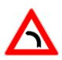 A,1
- Icyapa cy’ikoni ry’iburyo. 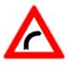 A,1
- Icyapa cy’uruhererekane rw’amakoni irya mbere riri ibumoso 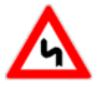. A1
- Icyapa cy’uruhererekane rw’amakoni irya mbere riri iburyo 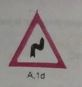. A1
-
Akamanuko gashobora guteza ibyago.
 A2
A2
- Akazamuko gashinze cyane 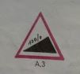. A3
-
Ifungana ry’umuhanda.
 A4a
A4a
- Ifungana ry’umuhanda n’akayira gasatira umuhanda ibumoso. 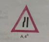A4b
- Ifungana ry’umuhanda bitewe n’akayira gasatira umuhanda iburyo. 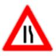A4c
- Uguhinguka ku mwaro cg ku nkombe 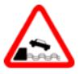. A5
- Umuhanda utaringaniye 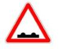. A6
- Umuhanda unyerera 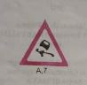A7
- Utubuye dutaruka mu muhanda. 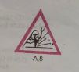A8
-
Akayira k’abanyamaguru
 A10
A10
- Amabuye ahanuka 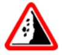A9
- Abana bavuye kwiga cg gukina 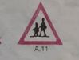.A11
- Aho abanyamagare bahingukira 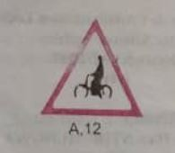A12
- Akayira k’amatungo 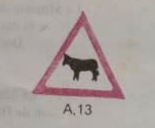.A13
- Akayira k’inyamaswa 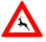.A14
- Ahegereye igice cy’umuhanda gikorwamo imirimo 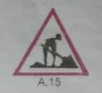.A15
- Ibimenyetso bimurika ahegereye akayira A16
- Ikibuga cy’indege .A17
- Umuyaga w’intambike 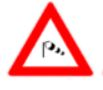 A18
- Umuhanda ubisikanirwamo 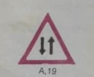 A19
- Inkomane gutambuka mbere gutambuka mbere hakurikijwe amategeko rusange. 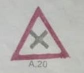A 20
- Inkomane aho umuhanda umwe urasukira ibumoso mumfuruka yenda kuba igororotse. 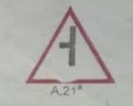 A21
- Inkomane aho umuhanda umwe urasukira iburyo mi mfuruka yenda kuba igororotse. 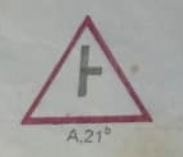 A21
- Amasangano ameze nka T 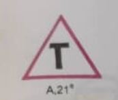A21e
- Amasangano ameze nka Y 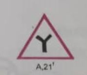A21f
- Uruhererekane rw’inkomane.A21g et 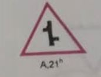A21h
- Ahegereye inkomane aho guhagarara akanya gato ari itegeko 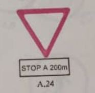.A24
- Aho banyura bazengurutse 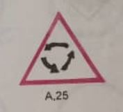.A25
- Ahegereye amasangano y’inzira nyabagendwa n’inzira ya gare ya moshi ibambiye.A26 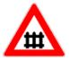
- Ahegereye amasangano y’inzira nyabagendwa n’inzira ya gare ya moshi itabambiye .A27 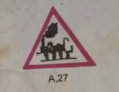
- Ahegereye amasangano n’inzira ya gare ya moshi. A28a, A28b, A28c 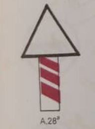 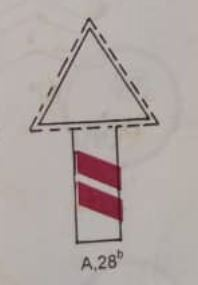 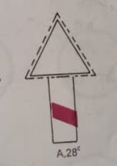
- Ibyago bidasobanuye ukundi. A29 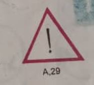
-
Icyago cg aho baba bayobereza umuhanda. A30 et
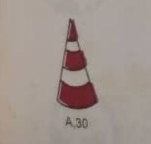 A3
 A31
A31
- Tanga inzira 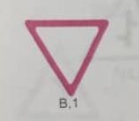. B1
- Hagarara akanya gato . B2 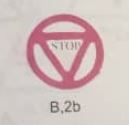. B2
- Umuhanda batambukamo mbere . B3
- Iherezo ryo gutambuka mbere . B4
- Gutambuka mbere kw’ibinyabiziga biturutse aho ujya . B5
- Gutambuka mbere y’ibinyabiziga biturutse imbere 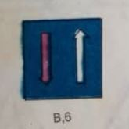. B6
- Inkomane y’inzira nyabagendwa n’inzira ya Gare ya moshi. B7a et 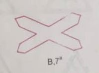 B7b 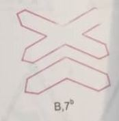
- Ntihanyurwa . C1
- Ntihanyurwa mu byerekezo byombi .C2a
-
Ntihanyurwa n’abandi uretse abahatuye. C2b

-
Ntihanyurwa n’ibinyabiziga bimwe na bimwe cg abagenzi bamwe na bamwe. C3a kugeza C3j
 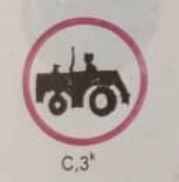
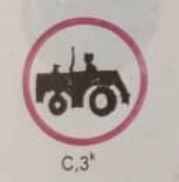
-
Ntihanyurwa n’ikinyabiziga icyo aricyo cyose gifite moteri uretse amapikipiki adafite akanyamitende ko ku ruhande ndetse na velomoteri.
C3a
- Ntihanyurwa n’amapikipiki. 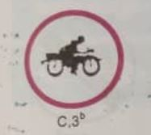 C3b
- Ntihanyurwa n’ibinyamitende. 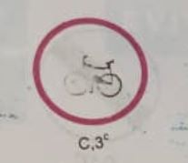 C3c
- Ntihanyurwa na za velomoteri 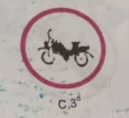.C3d
- Ntihanyurwa n’ibinyabiziga bigenewe gutwara ibicuruzwa. 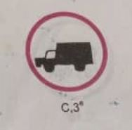 C3e
-
Ntihanyurwa n’ikinyabiziga icyo aricyo cyose gikurura romoroki itari makuzungu cg romoroki ifite umutambiko umwe.
 C3f
C3f
- Ntihanyurwa n’abanyamaguru. 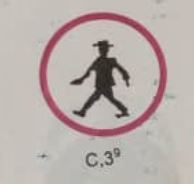 C3g
- Ntihanyurwa n’ibinyabiziga bikururwa n’inyamaswa. 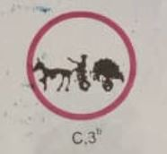 C3h
- Ntihanyurwa n’utunyamitwaro dusunikwa. 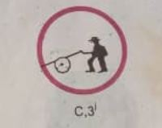 C3i
- Ntihanyurwa n’ibinyabiziga bihinga bifite moteri. C3k
- Ntihanyurwa n’amoko menshi y’ibinyabiziga. C4a na 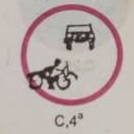 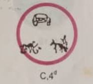 C4b
- Ntihanyurwa n’ibinyabiziga bifite ubugari burenze urugero rwerekanwe . C5
- Ntihanyurwa n’ibinyabiziga bifite uburebure bugaragazwa muri metero .C6
- Ntihanyurwa n’ibinyabiziga bifite uburemere bugaragazwa muri toni .C7
- Ntihanyurwa n’ibinyabiziga bifite uburemere ku mutambiko burenze ubwerekanwa muri toni .C8
- Ntihanyurwa n’ibinyabiziga cg ibinyabiziga bikomatanye bifite uburebure habariwemo n’imitwaro burenze urugero rwerekanwe muri metero .C9
- Birabujijwe ko ibinyabiziga bigenda bidasize hagati yabyo intera yerekanywe muri metero .C10
- Birabujijwe gukata werekeza aho akarangacyerekezo kerekana.C11a et C11b
- Birabujijwe guhindukira .C12
- Birabujijwe guca ku binyabiziga byose uretse ibinyamitende ibiri n’amapikipiki adafite akanyabiziga ko ku ruhande. C13a
- Birabujijwe kunyura ku kindi kinyabiziga. C13b
- Umuvuduko ntarengwa .C14
- Birabujijwe kuvuza amahoni .C15
- Birabujijwe gutambuka udahagaze umwanya muto. C16
- Iherezo ry’ibibuzwa byose mu karere ku binyabiziga bigenda. C17a
- Iherezo ry’ibuzwa ry’umuvuduko. C17b
-
Iherezo ry’ibuzwa kunyuranaho.
 C17c
C17c
-
Birabujijwe guhagarara umwanya munini
 .C18
.C18
- Birabujijwe guhagarara umwanya munini cg umuto.C19
- Birabujijwe guhagarara umwanya munini mu minsi cuni n’itanu ya mbere y’ukwezi.C20a et C2b
- Ibyapa byibura bitatu by’inyongera. F3a, F3b, F3c
- Icyerekezo gitegetswe. D1
-
Uguhigama (gutanga umwanya ngo abandi bahite) D1c

- Ugukikira ibitegetswe.D2
- Inkomane banyuramo bazengurutse. D3
- Inzira y’ibinyamitende itegetswe.D4
- Inzira y’abanyamaguru.D5
- Inzira y’abanyamafarashi itegetswe. D6
-
Inzira y’amatungo itegetswe. D7
- Umuvuduko muto ntarengwa utegetswe. D8
- Iherezo ry’umuvuduko muto.D9
- Kumenyesha mbere icyerekezo. E1a
- Umuhanda udakomeza. E2a, E2b
- Inzira igomba kunyurwamo. E3
- Umwanya mu muhanda bitewe icyerekezo umugenzi ashaka gufata imbere mu nkomane. E4
- Icyerekezo cy’akarere.E5a, E5b
-
Kuyobya umuhanda. E5c

- Ikibuga cy’indege. E6
- Ikibanza cy’ingando. E7
- Icumbi ry'urubyiruko. E8
- Kwinjira mu mudugudu. E9
- Iherezo ry’umudugudu. E10
- Inzira y’abanyamaguru aho itangirira. E11
- Ibitaro. E12
-
Icyerekezo kimwe. E13a

- Inzira idakomeza. E14
-
Umuhanda uromboreje w’ibice byinshi.E15

- Iherezo ry’umuhanda uromboreje. E16
- Umuhanda ugenewe imodoka. E17
- Iherezo ry’umuhanda ugenewe imodoka. E18
-
Aho otobis zihagarara.E19
- Aho amatagisi ahagarara. E19bis
- Parking.E20
- Amabwiriza yihariye (uburyo bwo kugendera ku byambu cg ku kibuga cy’indege).E21
- Intera iri hagati y’icyapa n’intangiriro y’ahantu hatera ibyago.F1
- Uburebure bw’igice cyatera ibyago.F2
-
Kwerekana ahabujijwe guhagarara umwanya munini. F3a kugeza F3c

- Ikintu ngoboka. F5
- Ahari ubutabazi. F6
- Aho bagobokera ibinyabiziga. F7
- Ahari telefoni. F8
- Ahari lisansi na Mazutu. F9
- Hoteli cg icumbi ry’abangenzi. F10
- Aho bafatira ifunguro. F11
-
Urunywero cg urusamuriro. F12

- Ahateganyirijwe ururiro rw’abahisi. F13
- Aho bahagurukira batembera. F14
- Ikibanza cy’ingando. F15
- Ikibanza cy’abantu bagendera ku nyamaswa. F16
- Ikibanza cy’ingando cg abantu benshi bagendera ku nyamaswa. F17
- Icumbi ry’urubyiruko. F18